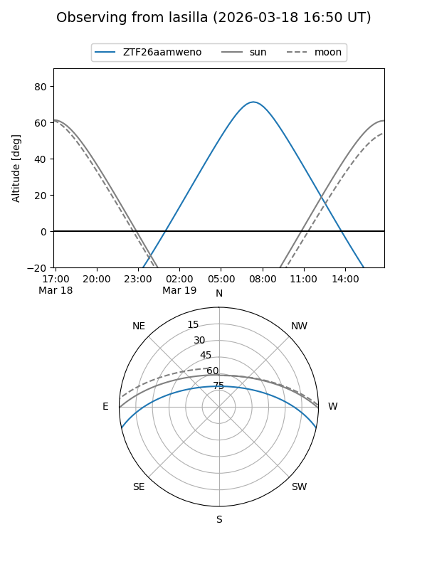
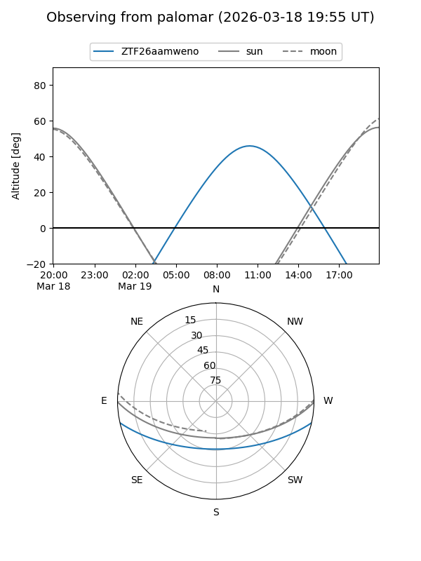

ZTF26aamweno
Target ZTF26aamweno at 2026-03-18 14:59
Aliases and brokers:
FINK: link
Lasair: link
ALeRCE: link
alt names
ZTF26aamweno (ztf,fink_ztf)
Coordinates:
equatorial (ra, dec) = 216.0236,-10.54864
equatorial (HMS+DMS) = 14:24:05.65,-10:32:55.12
galactic (l, b) = (336.8517,+46.13162)
Flags:
Photometry:
last ztfg=20.10
1 ztfg detections
Lightcurve
Visibility


Additional plots